재미로 읽는 경항모 이야기 (1)
게시: 2020-11-19T06:30:14+09:00
한국 해군의 경항모 계획에 대해 밀덕들의 찬반론이 거셉니다. 항모와 전함에 관심이 많지만 (엄근진) 절대 밀덕이 아닌 저는 개인적으로는 USS America와 같은 강습상륙함(LHA) 건조계획에 찬성합니다. 사실 우리나라 해군이 만들겠다는 것도 딱 그 정도입니다. 주변국과의 군비 경쟁 완화나 기재부 예산 심의 통과를 위해서는 포장을 강습상륙함이라고 해야 할 것 같은데 왜 굳이 경항모라고 썰을 풀었는지 의아하게 생각합니다. 아무튼 한국 해군의 경항모 추진 계획을 기념하여 그동안 페북에 토막토막 올려놓았던 WWII 당시의 경항모 이야기들을 사진과 함께 올립니다. 제 블로그 전체가 그렇습니다만 어디까지나 흥미위주의 읽을거리에 불과하며 결코 전문가의 진지한 포스팅이 아님을 감안하고 읽으세요. <대통령의 고집으로 만들어진 경항모> 첫번째 사진은 WWII 중 미해군 Independence-class의 1만1천톤급 경항모 USS Monterey. 인디펜던스급 경항모(CVL)는 경순양함 함체를 기반으로 설계된 것이라서 호위항모(CVE)와는 달리 31노트 이상으로 속력이 빨랐으나 역시 장갑은 없었음. 원래는 9대의 전투기와 9대의 폭격기, 그리고 9대의 뇌격기라는 매우 균형잡힌 구성의 함재기들을 실을 예정이었으나 이런저런 이유로 결국 24대의 Hellcat 전투기와 9대의 Avenger 뇌격기를 싣고 다녔음. 이 경항모는 의외로 루스벨트 (Franklin D. Roosevelt) 대통령의 고집으로 만들어진 것. WWII 발발 직전, 루스벨트는 항모 전력에 큰 관심이 있었으나 해군에서는 건조에 시간이 너무 오래 걸린다고 심드렁. 루스벨트는 포기하지 않고 '그럼 전함 대신 순양함 기준으로 경항모를 만들면 되지 않을까' 라고 연구를 지시. 해군에서는 다시 '그런 쬐그만 경항모는 아무 도움이 안돼요' 라고 연구 보고서를 냈으나 루스벨트는 'OK할 때까지 계속 연구'를 지시. 그러는 중에 WWII 터지고 전함보다는 항공모함이 필요하다는 것이 명백해지면서 급한 대로 빨리 만들 수 있는 경순양함 기반의 경항모를 먼저 찍어냄. 만들어놓고 보니 역시 작은 항모라서 문제점 속출했는데 가장 큰 문제는 세가지. (1) 날씨가 조금만 궂어도 마구 흔들려서 문제 (2) 비행갑판이 짧고 좁아서 이착함 사고율이 높음. (3) 피격되면 답이 없음.
(1)과 (2)는 상관 관계가 깊은 사안인데, WWII 당시 적기나 적 고사포에 희생된 조종사보다 사고로 희생된 조종사 수가 더 많다는 이야기가 있을 정도 (확인은 못했음). 게다가 너무 작다보니 폭탄이나 어뢰, 항공유 등을 격납고에도 보관해야 하는 문제가 심각. 결국 1944년 10월 필리핀 침공 작전에 포함된 USS Princeton (CVL-23)이 일본 급강하 폭격기로부터 폭탄 딱 1방을 맞고 별것 아닌 것으로 시작되었던 화재가 결국 유폭을 일으키며 결국 침몰. 이때 옆에서 불을 꺼주던 순양함 USS Birmingham도 사상자를 내며 큰 피해를 입음. (아래 두번쨰 및 세번째 사진) 그래도 그 필리핀 침공 작전에 투입된 고속 항모 전단의 항공 전력의 약 40%는 이 경항모들이 제공하는 등 꽤 쏠쏠한 활약을 했음.
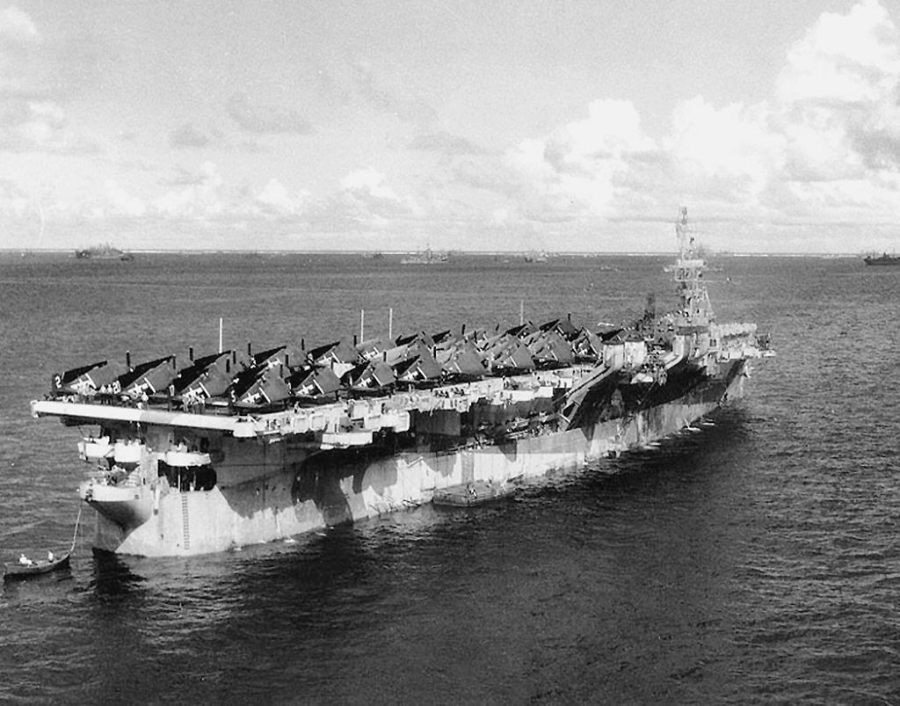 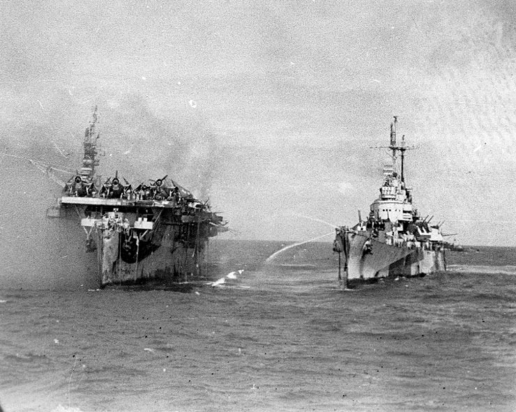 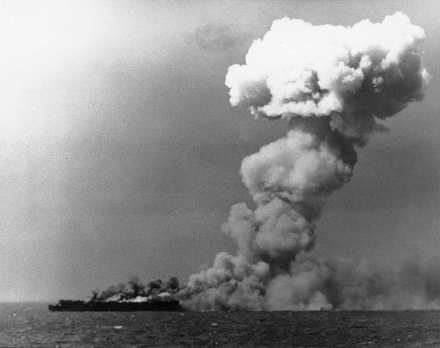
<순양함과 포격전을 벌인 항모> USS White Plains (CVE-66), 카사블랑카급 1만톤급 작은 호위항모. 상선을 기반으로 만든 보잘 것 없는 호위항모답게 속도도 19노트에 함재기도 24대. 어찌나 날림으로 만들었는지 1943년 2월에 기공 들어가서 9월에 진수시키고 11월에 정식 취역. 그러나 이 항모는 특이한 기록이 있는데 1944년 10월, 레이테 만 해전 중 주요 전투였던 사마르(Samar) 해전에서 야마토를 선두로 하는 일본 수상함대와 당당하게 포격전을 벌이고 특히 순양함을 격침시키는데 일조했다고 주장했다는 점. 1944년 10월 24일 아침, 호위 항모들로 이루어진 소함대를 정규 항모들이라고 착각한 야마토가 처음으로 포격을 날린 타겟이 바로 이 화이트플레인. 아무짝에도 쓸모없는 덩치답게 야마토는 4차례나 일제 포격을 가했는데도 화이트플레인이 급선회 하는 바람에 한 방도 맞추지 못했음. 다만 빗나간 포탄 한방이 우현 밑바닥 해저에서 폭발하는 바람에 그 충격만으로 일부 장비 고장나고 굴뚝에서 검은 연기가 무럭무럭... 야마토는 그게 명중탄 때문인지 알고 타겟을 다른 적함으로 옮겨감. 이후 벌어진 포격전에서 화이트플레인은 일본 순양함 쵸카이(1만5천톤, 35노트, 7.9인치 포 10문)와 대등한(?) 포격전을 벌이고 쵸카이에 심각한 타격을 주어 쵸카이가 전선에서 이탈하게 만들었음. 항모 주제에 순양함과 포격전을 벌일 수 있었던 것은 화이트플레인에게는 딱 1문의 5인치 양용포가 있었는데, (어차피 죽은 목숨이니) 죽어라 쵸카이에게 포탄을 날림. 사실 고사포로나 쓰이는 5인치 양용포로는 쵸카이의 장갑을 관통하는 것이 불가능. 근데 그게 럭키샷으로 쵸카이의 갑판에 장착되어 있던 어뢰발사관을 명중시키고, 그 속에 들어있던 어뢰가 유폭되면서 쵸카이 중파. 특히 방향타가 고장 나면서 쵸카이는 일본 함대에서 이탈하여 헤매다가 미해군 항공기의 폭탄을 얻어맞고 끝장. 나중에 자국 구축함에 의해 자침됨. 이런 주장이 가능했던 이유는 일본해군의 자랑 산소어뢰(문과들도 다 아는 H2O 어뢰)의 불안정성 때문. 산소어뢰(93형 어뢰, 연합군 명칭 long lance)는 사정거리가 10km에 달할 정도로 매우 우수한 어뢰였으나 압축산소(거듭 이야기하지만 화학명 H2O) 때문에 안정성이 떨어져 충격에 유폭되기가 쉬웠음. 이 때문에 일부 일본 순양함들은 미군 항공기로부터 공습을 당하기 전에 미리 갑판에 있던 어뢰 발사관으로부터 산소어뢰를 방출해버리기도 했음. 그러나 이건 화이트플레인의 5인치 포수들의 주장일 뿐이었고 확인된 바는 없었는데, 75년이 지난 2019년, 마침내 탐사팀이 침몰한 쵸카이의 잔해를 조사해보니 어뢰발사관이 멀쩡. 현재 짐작으로는 당시 사선이 겹쳤던 일본 전함 콩고가 발사한 포탄이 쵸카이의 뒤통수를 쳤다는 설이 유력. 아무튼 화이트플레인의 포수들은 자기들이 일본 순양함을 잡았다고 생각하며 죽을 때까지 자랑스러워 했음.
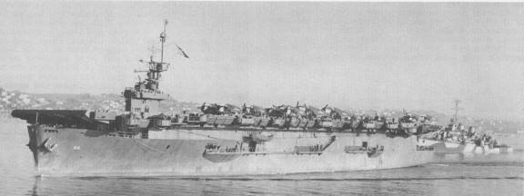 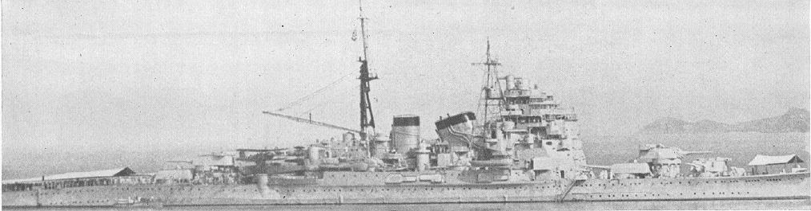
<세계 최초의 항모> 1942년 3월 7일, 대공 경순양함인 HMS Hermione에서 찍은 사진. 지중해 말타 섬에 영국 공군 항공기들을 싣고 가는 두 척의 영국 항모. 저 중 앞쪽에 있는 HMS Argus는 진짜 항모의 시조새로서, 사실상 세계 최초의 항모임. 원래 1917년에 진수된 여객선이었는데 1918년에 영국 해군이 항공모함으로 개조. 이후 지금까지도 모든 항공모함은 다 이 디자인에서 벗어나지 않음. 1만5천톤에 20노트. 함재기는 최대 18대까지만.
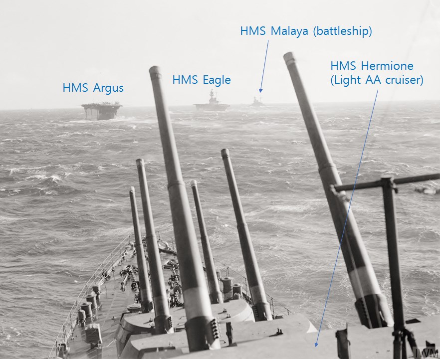 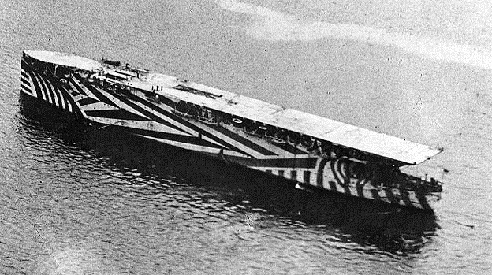
<세계 최초의 함재기에 의한 폭격은 항모가 나오기도 전에> 세계 최초의 항모는 1917년에 진수되어 1918년 9월에 취역한 HMS Argus이지만, 항모에서 이륙한 함재기에 의한 폭격은 그보다 2개월 전인 1918년 7월, (지금은 덴마크 땅이지만) 당시 독일 영토였던 퇸데른(Tondern)의 제펠린 비행선 기지를 타겟으로 수행됨. HMS Furious는 1916년 진수된 배수량 2만6천톤 30노트 짜리 전투순양함이었는데 건조 도중에 항공기 이착륙을 위한 항공모함으로 어정쩡하게 개조. 항모라는 개념이 아직 정립되지 않았던 시대라서 처음엔 함교 앞쪽의 포탑들만 떼어내고 거기에 비행갑판을 설치. 1917년 말에 함교 뒤쪽의 포탑도 떼어내고 거기에도 비행갑판을 달았는데 함교 구조물은 그대로. 거기에 착륙하려면 함교 구조물와의 충돌 위험 때문에 조종사들은 '차라리 바다 위에 불시착하는 것이 훨씬 안전하다'고 평가. 1917년 7월에 1,2차 각 3대씩의 Sopwith Camel 폭격기들이 퓨리어스에서 이륙하여 독일 비행선 기지를 폭격, 임무는 완수했으나 1차 공격대의 파일럿들은 돌아갈 연료가 부족하다고 판단하여 그냥 덴마크로 고고씽. 2차 공격대의 파일럿들은 돌아오다가 2명은 퓨리어스 근처에서 바다 위에 불시착. 1명은 행방불명 되었다가 며칠 뒤에 바다 위에서 시신 회수. 작전은 성공이라면 성공이지만 제펠린 2대와 기구 1대를 파괴하는 성과를 내고 대신 항공기 7대 상실. 조종사 1명 사망 3명 덴마크에 구금됨. 결국 퓨리어스는 1925년에 함교 구조물도 완전히 제거하고 HMS Argus처럼 완전 flat top 형태를 가진 제대로 된 항모로 거듭남. 첫사진 : 앞갑판만 있는 퓨리어스 둘째사진 : 뒷갑판도 생긴 퓨리어스 셋째사진 : 퇸데른 폭격을 위해 퓨리어스 갑판에 대기 중인 Sopwith Camel 7대 (원래 7대였는데 1대는 엔진 고장으로 귀환하여 불시착)
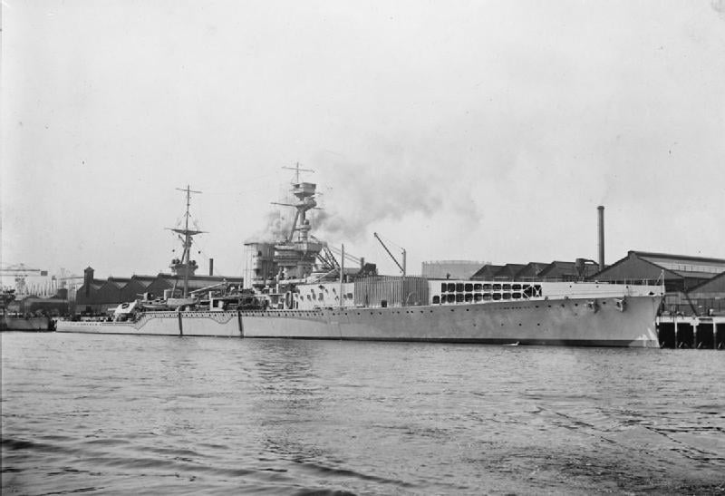 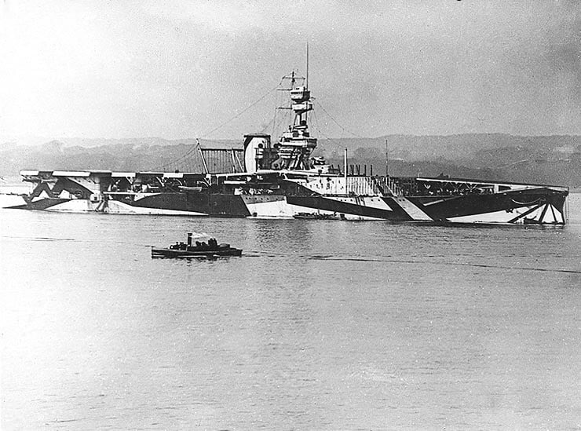 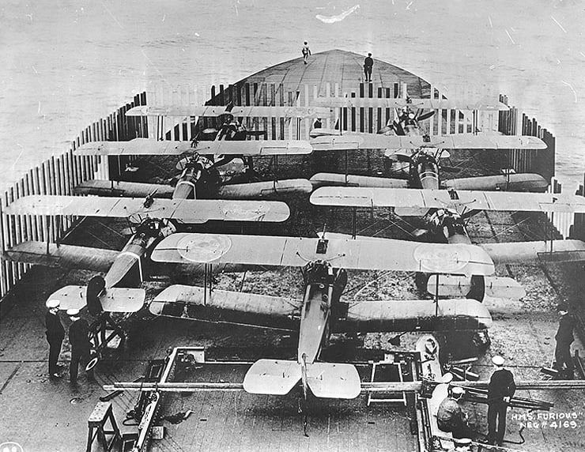
<세계최초의 ski-jump대는 누가?> 2차세계대전 초기만 해도 대부분의 항공기들은 catapult 없이도 잘 날았음. 가령 미해군의 3번째 정규항모 USS Saratoga (CV-3)만 해도 원래 캐터펄트가 하나 있긴 했으나 무거운 수상기를 띄울 때나 가끔 썼고 대부분의 복엽기나 단엽기는 바람방향으로 항모가 전속 항진하면 자력으로 이륙 가능. 그래서 오히려 캐터펄트를 1930년대 후반에 떼어냈다가 4.5톤 이상 되는 무거운 함재기가 도입되자 1944년 중반 경에 캐터펄트를 재도입. 그러니 항공모함의 원조에 가까운 HMS Furious에는 당연히 캐터펄트가 없었음. 그런데 1944년 비스마르크의 자매함 Tirpitz를 잡기 위한 공습에 HMS Furious가 동원되면서, 이 낡고 작은 항모에서 꽤 큰 신형 함재기인 Fairey Baracuda (무장시 대략 6톤)을 띄우게 됨. 뭔가 때려부수는데는 창의력이 넘쳐나는 전투민족 앵글로색슨이 세계최초의 스키 점프대를 (목재로 대충) 만들어 성공적으로 바라쿠다를 이륙시킴. 그러나 결국 되풀이된 임무는 실패. 결국 해군에 맡겨봐야 일이 안된다며 나선 영국공군 랑카스터 폭격기에 의해 티르피츠는 Tall Boy 2방을 맞고 침몰.
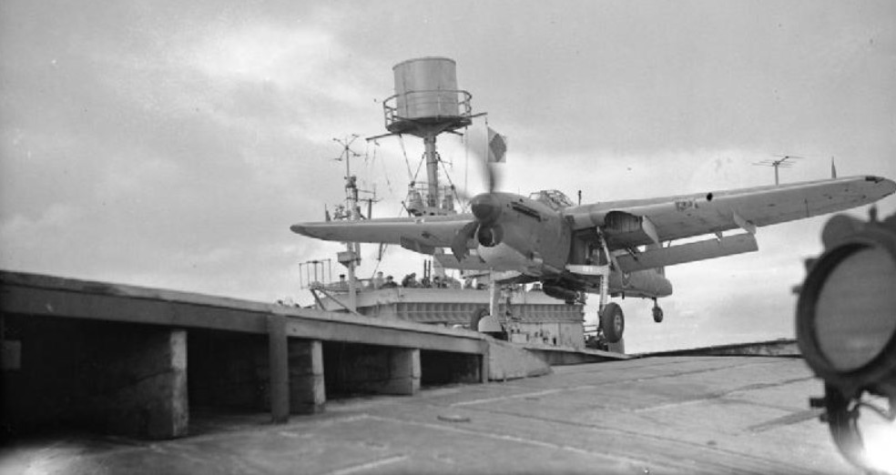 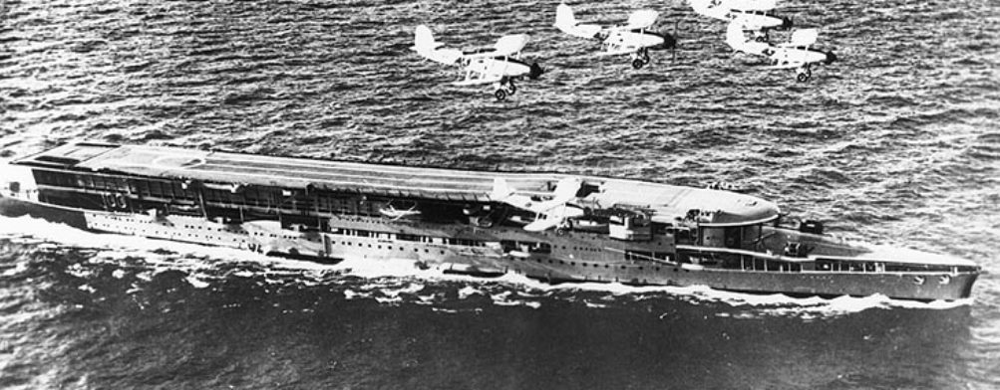
<격침된 마지막 영국 항모> 1942년 11월, 연합군의 북아프리카 침공작전인 Operation Torch를 마치고 돌아오는 빈 수송선단에 대고 지브랄타 바로 서쪽에서 독일 유보트가 어뢰 3발을 발사. 드물게도 3발이 모두 각각 다른 선박에 명중했는데, 2척은 수송선이었고 나머지 1척이 Archer-class 호위항모인 HMS Avenger (9천톤, 16노트). 항모가 작다보니 어뢰 폭발이 바로 탄약고까지 침투해서 유폭을 일으키는 바람에 5분 안에 침몰. 514명이 숨지고 12명만 구조됨. 작은 항모인데도 영국 항모 격침 사건 중 2번째로 많은 사망자를 냄. 영국해군은 대전 초반에 HMS Glorious, HMS Courageous, HMS Ark Royal 등 총 7척이라는 많은 수의 항모를 격침당했으나 HMS Avenger가 그렇게 적에게 격침된 마지막 항모. 그나저나 저렇게 작은 갑판 (150m x 20m) 에서도 이착함이 되는 모양... 저기에 착함하는 조종사는 정말 ㅎㄷㄷ
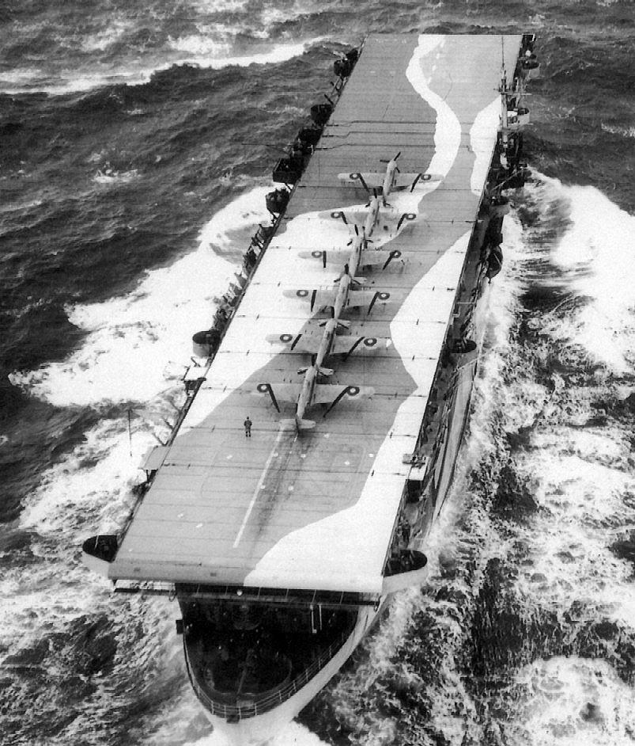
<호위항모의 옥탑방>
HMS Queen, 9천톤, 17노트, Ruler-class 호위항모. 원래 미제 Bogue-class 호위항모였는데 lend-lease로 영국 해군에게 공여됨. 워낙 좁은 비행 갑판 (약 150m x 20m) 위에서 이리저리 함재기를 움직여야 하다보니 저렇게 함재기를 수용하는 경우도 있었다고. 의외로 안정적이라고 함.
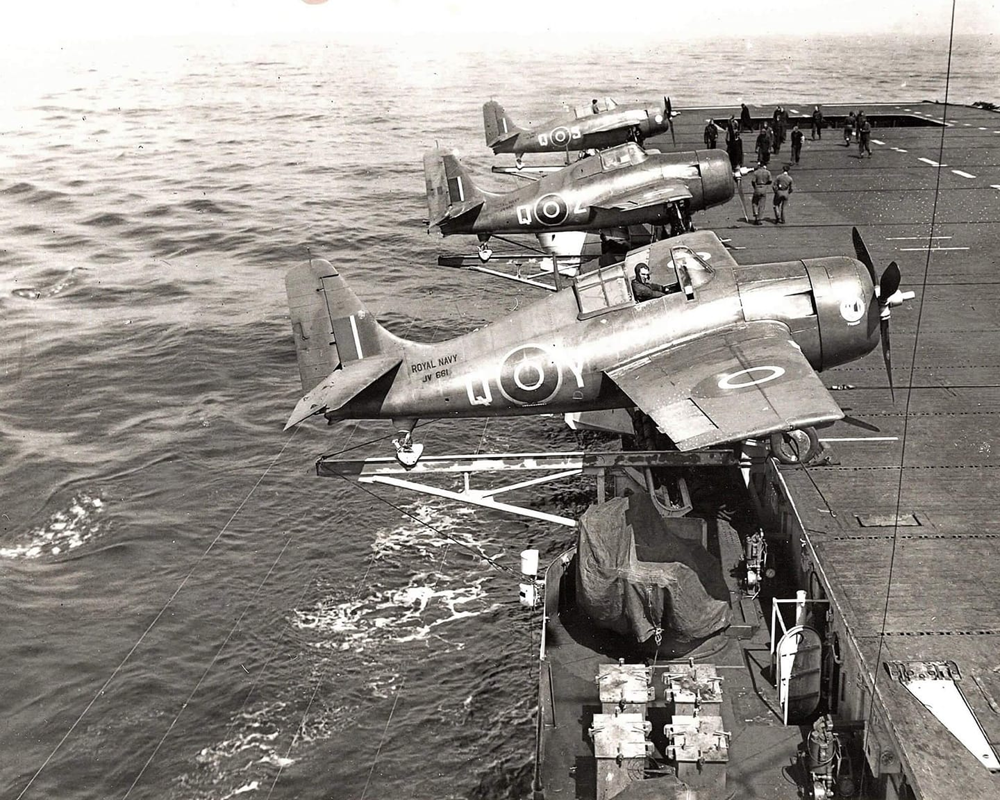
** 모든 사진 및 스토리는 위키피디아에서 가져온 것입니다.